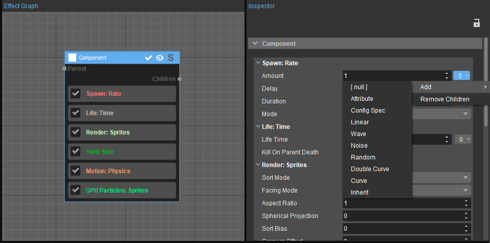
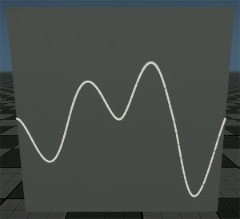
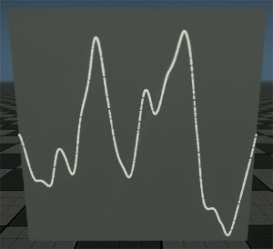
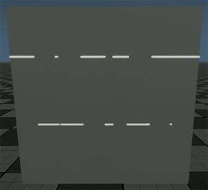
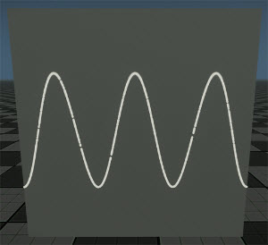
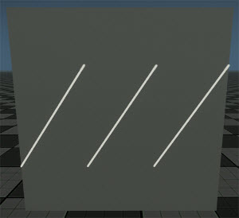
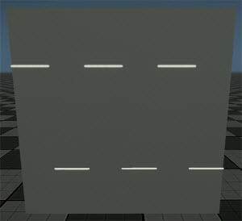
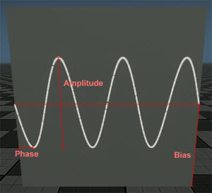
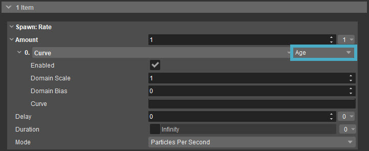
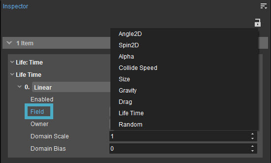

Обзор
Хотя эффекты частиц предоставляют широкий спектр реализаций функций, которые можно использовать для создания всех видов эффектов, их истинная мощь достигается только тогда, когда модификаторы используются для динамического изменения поведения эффекта.
Многие свойства, реализованные с помощью эффектов частиц. Функции могут содержать стек модификаторов.

Опции меню модификаторов
На этой странице некоторые модификаторы помечены как основанный на функциях. Эти модификаторы имеют дополнительный набор свойств, называемый Домены. При включении эти домены могут отображать дополнительные поля в зависимости от самого Модификатора и типа домена. Для получения дополнительной информации о модификаторах и доменах на основе функций см. Общие настройки модификаторов на основе функций раздел ниже.
Модификаторы
Модификаторы можно назначить многим свойствам на панели «Инспектор». Чтобы получить доступ к списку модификаторов, нажмите кнопку 
Атрибут
С помощью этой опции пользователи могут изменять исходное свойство на основе атрибута эффекта.
Этот модификатор представляет собой альтернативный способ использования атрибутов. Другим способом было бы использовать Линейный (модификатор на основе функции) с параметром источника, установленным на Атрибут.
Недвижимость | Описание |
|---|---|
Имя атрибута | Определяет имя атрибута для чтения. Если атрибут не существует в этом излучателе, Домен ввод получит значение 1 вместо этого. |
Масштаб и смещение | Позволяет атрибуту масштабироваться и смещаться. Обычно полезно, когда входной сигнал не находится в диапазоне от 0 до 1. |
Только появление | Указывает, должен ли атрибут применяться только при рождении частицы или он должен всегда влиять на все живые частицы. |
Спецификация конфигурации
Эта опция позволяет пользователям изменять исходное свойство в зависимости от типа платформы или настроек качества частиц. Наилучший результат может быть достигнут, если он используется для увеличения или уменьшения других свойств функций для обеспечения масштабируемости производительности.
Недвижимость | Описание |
|---|---|
Низкий | Значение масштаба, используемое при низких характеристиках PC. |
Середина | Значение масштаба, используемое при средней спецификации PC. |
Высокий | Значение масштаба, используемое в режиме High Spec PC. |
Очень высокий | Значение масштаба, используемое при очень высоких характеристиках PC. |
Xbox Один | Значение масштаба, используемое на XBox One. |
Xbox One X | Значение масштаба, используемое на XBox One X. |
PlayStation 4 | Значение масштаба, используемое при PlayStation 4. |
| PlayStation 4 Про | Значение масштаба, используемое на PlayStation 4 Pro. |
Линейный (модификатор на основе функции)
Эта опция позволяет пользователям комбинировать свойства, измененные с помощью домена; однако он не применяет никаких дополнительных модификаций. В этом модификаторе используются только свойства, основанные на функциях. Пожалуйста, обратитесь к Общие настройки модификаторов на основе функций для получения дополнительной информации.
Шум (модификатор на основе функции)
Использует потенциальное поле на основе шума Перлина для рандомизации входного свойства.
Недвижимость | Описание | ||||||||
|---|---|---|---|---|---|---|---|---|---|
Владелец | См. ниже. | ||||||||
| Масштаб домена | См. ниже. | ||||||||
| Смещение домена | См. ниже. | ||||||||
Режим | Определяет режим шума:
| ||||||||
Сумма | Указывает количество вариаций, которые будут добавлены к частице. Если сумма превышает 1, то он может обеспечить одновременно и положительную, и отрицательную вариацию. | ||||||||
Ширина импульса | Данное значение определяет баланс между частотой включения и выключения импульса. Например, значение 0.5 позволяет включать и выключать импульс с равномерной частотой; значения больше, чем 0.5 в результате импульс выключается чаще, чем включается. Доступно только тогда, когда Режим установлено на Пульс. |
Использование Масштаб домена и Смещение домена изменять частоту и фазу шума. Однако, если Масштаб домена значение слишком велико. Шум начинает вести себя ближе к чистой случайности и нечеткости; в результате может начать возникать диффузия.
 |  |  |
Гладкий | фрактал | Пульс |
Пример шумовых мод для частицы
Wave (модификатор на основе функции)
Этот модификатор используется для предоставления различных типов периодических значений. Его параметры основаны на тригонометрической математике и полезны для добавления регулярного поведения, а не дисперсии.
Свойства | Описание |
|---|---|
| Владелец | См. ниже. |
| Масштаб домена | См. ниже. |
| Смещение домена | См. ниже. |
Волна | Определяет режимы шума (см. примеры ниже):
|
Амплитуда, смещение | Позволяет пользователям добавлять настройки формы сигнала. |
Обратный | Если эта опция включена, эта опция инвертирует форму сигнала. |
Использование Масштаб домена и Домен Предвзятость изменять частоту и фазу волны.
Косинус аналогичен синусу с фазой 0,25.
 |  |  |
Грех | Пила | Пульс |
Примеры волновых уравнений

Пример настройки формы волны
Случайный
Обеспечивает быстрый способ добавления простых изменений в поведение частиц.
Свойства | Описание |
|---|---|
Сумма | Указывает количество вариаций, которые будут добавлены к частице. Если сумма больше 1, она может одновременно обеспечивать положительные и отрицательные вариации. |
Двойная кривая (модификатор на основе функции)
В отличие от кривой, модификатор двойной кривой использует две кривые Безье. Домен используется для выборки обеих кривых одновременно, в то время как Случайный Поле частицы используется для интерполяции между нижней и верхней кривыми Безье.
Это полезно для обеспечения дополнительной вариативности поведения частиц.
Свойства | Описание |
|---|---|
| Владелец | См. ниже. |
| Масштаб домена | См. ниже. |
| Смещение домена | См. ниже. |
Двойная кривая | Использует кривую Безье double для обеспечения дополнительной дисперсии. См. Particle Editor для получения дополнительной информации о редакторе кривых. |
Кривая (модификатор на основе функции)
Использует входные данные домена для выборки кривой Безье. В частицах кривые Безье имеют неограниченное количество точек; однако каждая точка должна находиться в диапазоне от 0 чтобы 1 по оси X, а по оси Y нет принудительных ограничений. Из соображений производительности точки Безье поддерживают уклоны, но не вес уклона.
Свойства | Описание |
|---|---|
| Владелец | См. ниже. |
| Масштаб домена | См. ниже. |
| Смещение домена | См. ниже. |
Кривая | Для изменения значений используется одна кривая. См. Particle Editor для получения дополнительной информации о редакторе кривых. |
Наследовать
Эта опция позволяет дочерним частицам наследовать родительские частицы. Поле выход.
| Недвижимость | Описание |
|---|---|
Только появление | Когда частица рождается, она наследует родительский компонент. Поле выход. |
Общие настройки модификаторов на основе функций

Многие модификаторы эффектов частиц основаны на функциях. Это позволяет модификатору принимать не только входные данные из значения свойства, измененного предыдущими модификаторами, но и другие аспекты частицы. Все эти Модификаторы имеют общий набор свойств.
Самый простой способ отличить обычный модификатор от модификатора, основанного на функции, заключается в том, что в случае модификатора, основанного на функции, в пользовательском интерфейсе появляется новое раскрывающееся окно, позволяющее пользователям выбирать домен.
Свойства | Описание |
|---|---|
Домен | В раскрывающемся меню «Модификаторы на основе функций» доступны следующие параметры:
Для бессмертных частиц или свойств, которые не применяются к частицам во время выполнения, эти значения всегда будут равны 0. |
Имя атрибута | Имя атрибута для чтения. Если атрибут не существует в этом эмиттере, значение Домена будет равно 1. Доступно, когда Домен установлено на Атрибут. |
Поле | Позволяет пользователям выбирать, из какого поля читать. Это свойство доступно, когда Домен установлено на Поле.
Существует разница между Случайный Домен и Случайный имущество, которое доступно, если Поле Домен выбран. Случайная область всегда выдает разные числа и является полностью стохастической. Поле Random, с другой стороны, соответствует собственному случайному числу частицы и может использоваться для обеспечения согласованного поведения между модификаторами. Это можно использовать, например, для того, чтобы иметь переменный, но постоянный размер и непрозрачность или чтобы все дочерние частицы имели ту же случайность, что и их родительские частицы.  |
Владелец | Указывает, откуда следует взять параметр «Домен» или «Поле»:
Если владельцем является родительский элемент, но родительский элемент частицы уже мертв, значение Домена всегда будет равно 1. Исключением из этого правила является Скорость функция, которая будет установлена на 0 вместо этого. |
Масштаб домена и смещение домена | Позволяет масштабировать и смещать входные данные домена. Обычно полезно, когда входные данные могут находиться за пределами диапазона от 0 до 1, например, Скорость или Атрибут. |
Только появление | В некоторых случаях желательно выбрать, будет ли модификатор применяться к каждой частице в каждом кадре или модификатор должен применяться только один раз при рождении частицы. |
GPU Поддержка
В настоящее время модификаторы имеют очень ограниченную поддержку в текущем конвейере GPU. На данный момент единственным модификатором, который можно использовать, является Кривая Модификатор, и его можно использовать только тогда, когда Владелец установлено на Я.